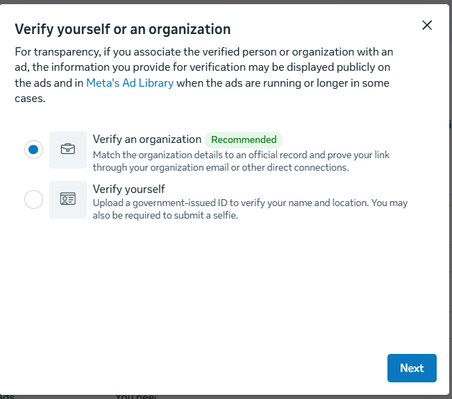
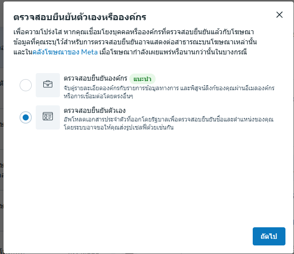
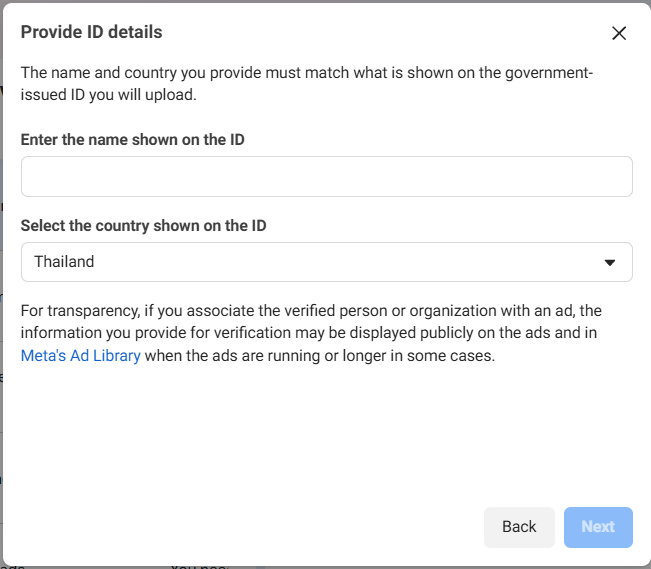
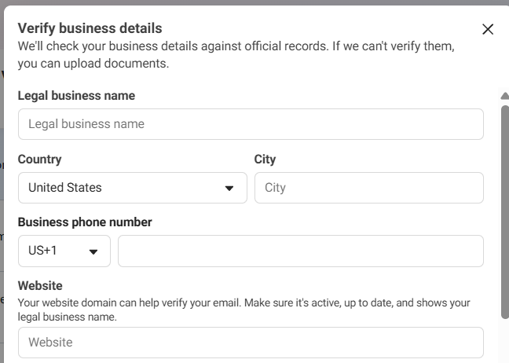
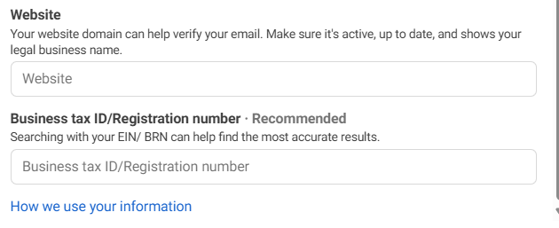
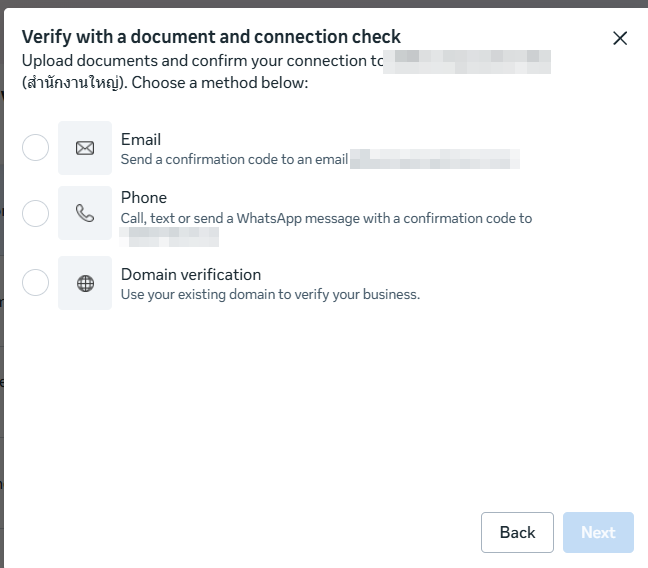

Verify yourself or an organization
การยืนยันตัวตนนี้มีวัตถุประสงค์เพื่อความโปร่งใสของโฆษณา
ข้อมูลที่ให้ไว้อาจถูกแสดงแบบสาธารณะบนโฆษณา และใน Meta's Ad Library
ในหน้าต่าง "Verify yourself or an organization" เลือกรูปแบบที่ตรงกับสถานะของคุณ
เลือกเสร็จแล้ว กดปุ่ม "Next" สีน้ำเงินที่มุมล่างขวา



ระบบจะนำข้อมูลไปตรวจกับบันทึกทางการ (Official records) — กรอกให้ ครบถ้วนและถูกต้อง
| Legal business name | ชื่อธุรกิจที่จดทะเบียนตามกฎหมาย |
|---|---|
| Country / City | เลือกประเทศ และพิมพ์เมืองที่ตั้งของธุรกิจ |
| Business phone number | เลือกรหัสประเทศ (เช่น TH +66) แล้วกรอกเบอร์โทรธุรกิจ — หากผิดรูปแบบ ระบบจะแจ้งเตือนสีแดงให้แก้ไข |

| Website | โดเมนเว็บไซต์ของธุรกิจ — ใช้ช่วยยืนยันอีเมลของคุณ |
|---|---|
| Business tax ID / Registration number | เลขประจำตัวผู้เสียภาษี หรือเลขทะเบียนนิติบุคคล — แนะนำให้กรอก เพื่อให้ค้นหาผลลัพธ์ได้แม่นยำที่สุด |
กรอกครบแล้ว กดปุ่ม "Next"

เมื่อระบบไม่สามารถตรวจสอบรายละเอียดธุรกิจจากบันทึกทางการได้โดยอัตโนมัติ ให้อัปโหลดเอกสาร (Upload documents) ในขั้นตอนถัดไป

ข้อมูลที่ให้ไว้อาจแสดงสาธารณะบนโฆษณาและ Meta's Ad Library